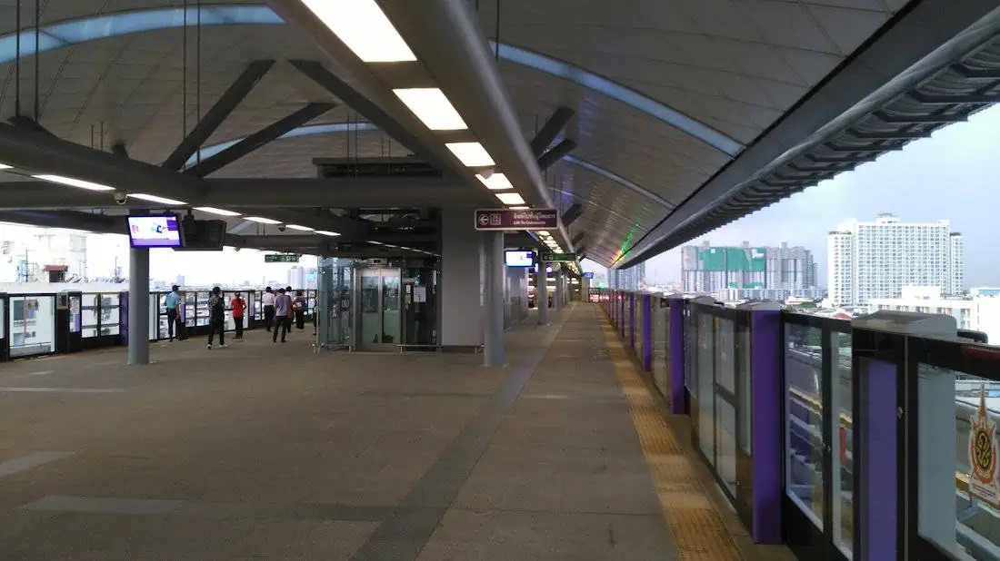

วิธีเดินทางรถไฟสายสีแดงต่อสายสีม่วง จ่ายเพียง 20 บาท โดยการรถไฟฟ้าขนส่งมวลชนแห่งประเทศไทย (รฟม.) พร้อมร่วมขับเคลื่อนนโยบาย “รถไฟฟ้า 20 บาท ตลอดสาย” อย่างต่อเนื่อง โดยตั้งแต่วันที่ 30 พฤศจิกายน 2566 เป็นต้นไป ผู้โดยสารที่เดินทางเชื่อมต่อระหว่าง MRT สายสีม่วง กับ สายสีแดง จะได้รับสิทธิชำระค่าโดยสารร่วม 2 สาย สูงสุดไม่เกิน 20 บาท เมื่อใช้บัตรโดยสาร EMV Contactless ใบเดียวกัน โดยเดินทางเชื่อมต่อสายที่ สถานีบางซ่อน ภายในระยะเวลา 30 นาที

นายสุรพงษ์ ปิยะโชติ รัฐมนตรีช่วยว่าการกระทรวงคมนาคม กล่าวว่า ในวันที่ 30 พฤศจิกายน 2566 นี้ จะลงพื้นที่ร่วมกับหน่วยงานที่เกี่ยวข้อง เพื่อทดลองใช้ระบบ EMV Contactless เดินทางข้ามสาย ระหว่างรถไฟฟ้า MRT สายสีม่วง และรถไฟฟ้าชานเมือง สายสีแดง พร้อมๆ กับประชาชนผู้ใช้บริการ เพื่อติดตามตรวจสอบความเรียบร้อยในการให้บริการด้านการเดินทางแก่ประชาชน โดยนโยบาย “รถไฟฟ้า 20 บาท ตลอดสาย” เป็นหนึ่งในนโยบาย Quick Win ของรัฐบาล ในด้าน “คมนาคม เพื่อความอุดมสุขของประชาชน” ซึ่งกระทรวงคมนาคมได้เร่งผลักดันให้เกิดขึ้นอย่างเป็นรูปธรรม เพื่อตอบสนองความต้องการและความคาดหวังของประชาชนในด้านการเดินทาง และการให้บริการระบบคมนาคมขนส่ง
นายภคพงศ์ ศิริกันทรมาศ ผู้ว่าการ รฟม. เปิดเผยว่า ในระยะ 1 เดือนกว่าๆ ที่รถไฟฟ้า MRT สายสีม่วง ได้เริ่มให้บริการด้วยอัตราค่าโดยสาร สูงสุดไม่เกิน 20 บาท ทำให้มีจำนวนผู้โดยสารในวันทำงานเพิ่มขึ้นเฉลี่ย 4,274 คน-เที่ยวต่อวัน คิดเป็น 6.07% และในวันหยุดเพิ่มขึ้นเฉลี่ย 4,789 คน-เที่ยวต่อวัน คิดเป็น 13.33% และ รฟม. คาดการณ์ว่าจำนวนผู้โดยสารรถไฟฟ้า MRT สายสีม่วง จะเพิ่มขึ้นได้อย่างต่อเนื่อง จากปัจจัยสนับสนุนต่างๆ ไม่ว่าจะเป็นการเปลี่ยนไปใช้อัตราค่าโดยสารร่วมระหว่างรถไฟฟ้า MRT สายสีม่วง และรถไฟชานเมือง สายสีแดง สูงสุดไม่เกิน 20 บาท ตั้งแต่วันที่ 30 พฤศจิกายน นี้เป็นต้นไป รวมถึงการที่รถไฟฟ้ามหานคร สายสีชมพู (MRT สายสีชมพู) จะเปิดให้บริการเต็มรูปแบบ และผู้โดยสารสามารถเปลี่ยนถ่ายระบบได้โดยสะดวกที่สถานีศูนย์ราชการนนทบุรี ในอนาคตอันใกล้นี้
ทั้งนี้ รฟม. พร้อมสนับสนุน นโยบายรถไฟฟ้า 20 บาท ตลอดสาย อย่างเต็มที่ มีความพร้อมที่จะดำเนินการตามนโยบายดังกล่าว โดยไม่จำกัดการดำเนินงานเฉพาะในรถไฟฟ้า MRT สายสีม่วงเท่านั้น แต่จะศึกษาแนวทางที่เหมาะสมร่วมกับ ขร. และหน่วยงานที่เกี่ยวข้อง เพื่อให้สามารถต่อยอดนโยบายนี้ไปใช้กับการกำหนดอัตราค่าโดยสารรถไฟฟ้าสายอื่นๆ ในความรับผิดชอบของ รฟม. ได้อีกด้วย ประกอบกับ รฟม. ได้พัฒนาระบบรับการชำระค่าโดยสารด้วยบัตร EMV Contactless ไว้รองรับการเดินทางเชื่อมต่อระหว่างรถไฟฟ้า MRT ทุกสาย กับระบบขนส่งอื่นๆ อย่างครบครันแล้ว จึงมีความมั่นใจว่า หากมีแนวทางการกำหนดอัตราค่าโดยสารแบบใหม่ในอนาคต รฟม. จะสามารถให้บริการและอำนวยความสะดวกให้แก่ผู้ใช้บริการได้อย่างมีประสิทธิภาพ เพื่อก่อให้เกิดประโยชน์สูงสุดแก่ประชาชน
ทั้งนี้บัตรที่สามารถใช้ในการเดินทางเปลี่ยนสายสีม่วงเป็นสายสีแดง หรือสายสีแดงเป็นสายสีม่วงนั้น ต้องเป็นบัตร EMV Contactless ของบัตรเครดิตทุกธนาคาร ส่วนบัตรเดบิตต้องเป็นบัตร EMV ที่ออกให้โดยธนาคารกรุงไทย และ UOB เท่านั้น
อ้างอิง การรถไฟฟ้าขนส่งมวลชนแห่งประเทศไทย (รฟม.)